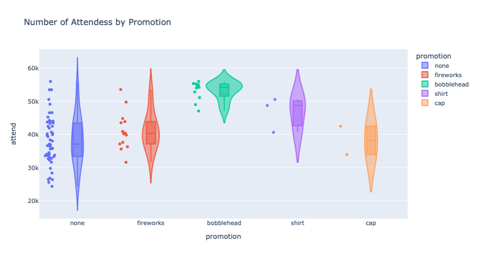
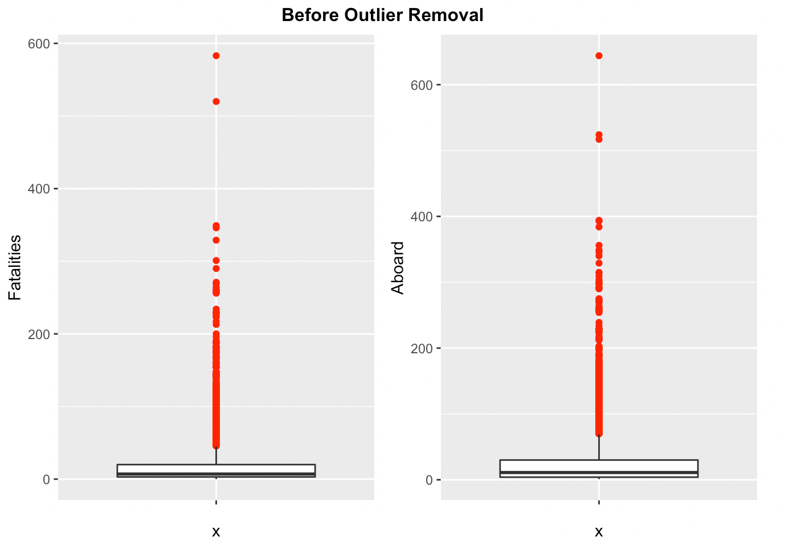
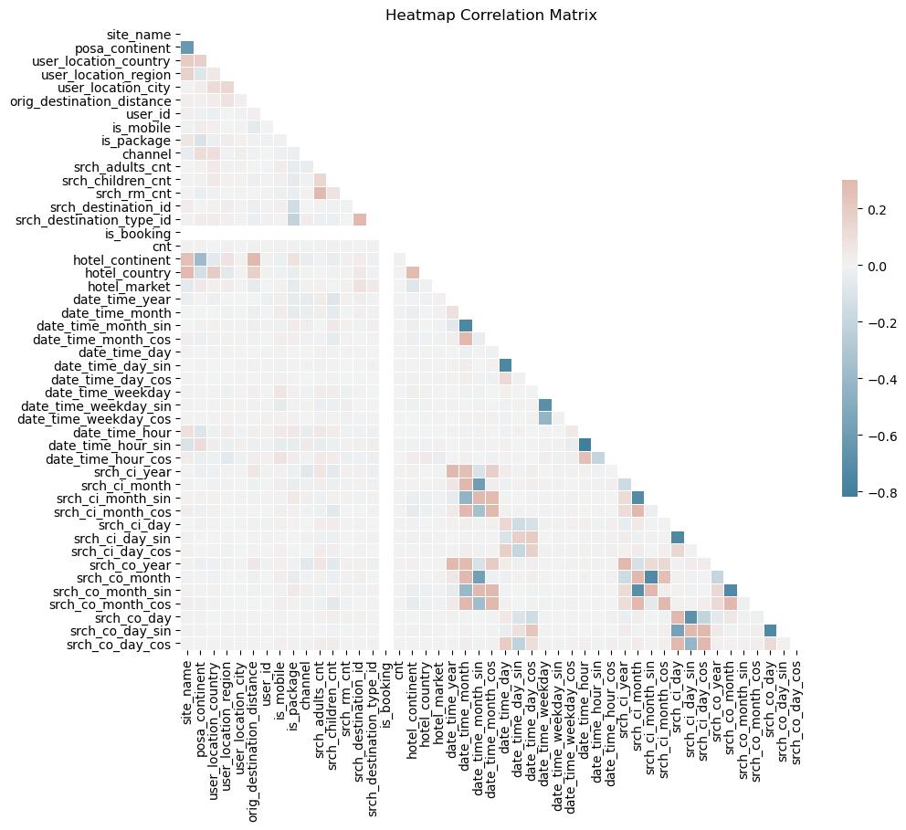
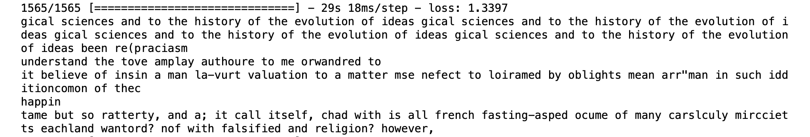
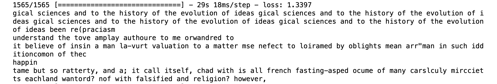

Welcome to Carlos Palomo's Protfolio
|
I am data scientist interested in how data shapes our lives and can be used to
further exapnd what
we know. With a backgrond in data science and mathematics, I am curious about all
fields
where data can help have an impact. This has lead me to explore a wide range of
applications of
data analytics and data mining such as reconnection moves on knotted polymer chains
within
globules, e-commmerce data in medical supplies industry, and variety of other
topics.
|
Education:
- UC Davis - BA Mathematics
- Bellevue University - MS Data Science
|
Experience:
- Vision in Education - Business Analyst
- University of Berkeley Data Analytic Bootcamp - Teaching Assistant
- TDSC.com Powered By Henry Schein - Business Analyst
- Arsuaga Vazquez Topological Molecular Biology Lab - Ungraduated
Researcher
|
Skills:
- Python
- |
- SQL
- |
- R
- |
- Data Visualization
- |
- Data and Quantitative Analysis
- |
- Data Mining
- |
Predictive Analysis
- |
- Machine Learning
- |
- ETL Development
|
Projects/Works
Data Science
A wide range of data science projects demonstrating various concepts such as: Machine Learning,
Neural Networks, Sentiment Analysis, Exploratory Data Analysis (EDA)

Machine Learning: Kepler Exoplanet
The purpose of the project is to develop a machine learning model that will aide in
the
prediction of Kepler Objects of Interests (KOI) is and exoplanet. This includes
performing an exploratory data anlysis, feature selection, and developing various
models using different classifiers.

Sentiment Analysis: Headline Sarcasm Detection
The purpose of the project is to create a machine learning model to determine
if a new headline is sarcastic or not. This project includes sentiment analysis,
text analysis, and developing various models using different classifiers.

Case Study Dodger Attendance
The purpose of the project is to demonstrate application of statistical review to come up with actionable item to
recommend to stakeholders
This projects includes data and quantitative analysis, and linear regression.

R: Airplane Crash Data
The purpose of the project is to preform a stastical analysis on airplane crash data using R.
This projects includes R, data and quantitative analysis, EDA and linear regression.


Classifier: Movie Streaming Provider
The purpose of the project is to develop a machine learning classifier to determine
what
streaming a service a movie is like to be hosted on. This projects includes EDA,
feature
selection, extra tree classifier.

Expedia Hotel Recommmendation
The purpose of the project is to develop a model using machine learning that will take look at various features and determine a hotel.
This project includes feature selection, EDA, machine learning, and an approach to handling cyclical data.

Example of Variational autoencoders
The purpose of the project is to demonstrate how a variational autoencoder can be
implmmented using Keras
This projects includes computer vision, KERA, self-supervised learning, VAE
 

Nietzche Text Generation
The purpose of this project is to generate text by using Kera Long Short-Term Memory (LSTM) algorthim based on corpus
of Nietzhce. This project demonstracts text generation, Keras, and unsupervised learning.